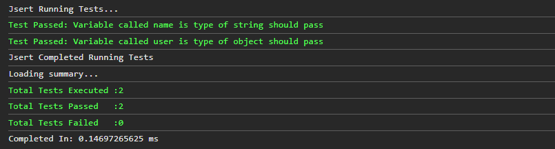

Version Control
Jsert is currently on version beta. The library is currently in the testing phase but it is stable. Hoping to ensure a good experience for developing and also looking at more exciting features!
The beta version Jsert file may be updated regularly. This is to ensure that the best is added to this library and developers can more out of it. Changes can be made to the beta file without versioning.
You can download the stable beta version here.
Or you can view the source code here.
Documentation
View the all documentation for the current beta version
This documentation may change frequently from time to time. Aiming to make the documentation easier to read and up to date with all the latest changes. Changes to the documentation will not have versions, if the documentation is different from what the beta version has, please download the latest beta version and use the documentation to do your updates.
Please ensure that you have added the Jsert file to your project and your website.
The above code example creates an instance of the Jsert object.
On the next line, it uses the jsert variable and adds a test method to the object.
The test() method accepts 2 arguments, name and test respectively.
Method signature looks like the below...
test(name: string, test: function)
**It is important to note that you need to specify the pass and fail scenarios inside your
tests.
e.g
jsert.passWhenEquals(this, actual, expected);
At the end when all tests are added, the last step is to execute all tests using the run() method.
The below image is the result of running tests. All information is logged to the console.
